Conversation 923
3 Point Knot Design
Prompt 1 · You
3 point knot made out of boxed rectangles
Response 1 · Google AI Mode
A 3-point knot made out of boxed rectangles is geometric and structural art commonly referred to as a cubic trefoil knot or a rectangular geometric trefoil knot. In mathematics and knot theory, a three-point knot is known as a trefoil knot ( knot), which represents a single continuous loop woven into three distinct crossings. When constructed using square borders, hollow blocks, or rectangular prisms rather than smooth curves, it creates an interlocking architectural or optical illusion style.
Depending on your project, this design is typically executed in one of two ways:
Flat 2D Geometric Layouts
In two dimensions, this knot is drawn using concentric, interlocking hollow rectangular frames. The lines break cleanly at ninety-degree angles to dictate which "box" passes over or under the other, satisfying the three-pointed intertwining rule of the classic tri-quetra or Celtic block.
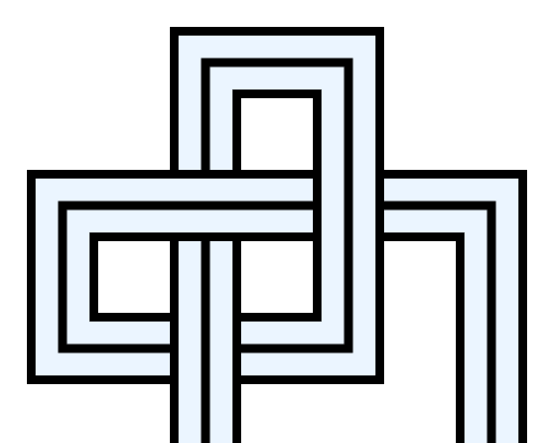
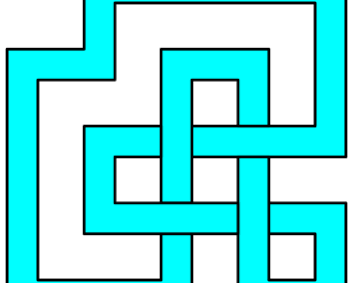
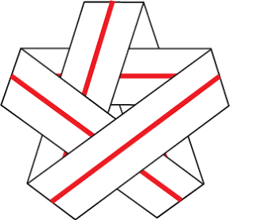
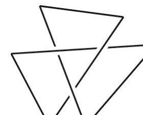
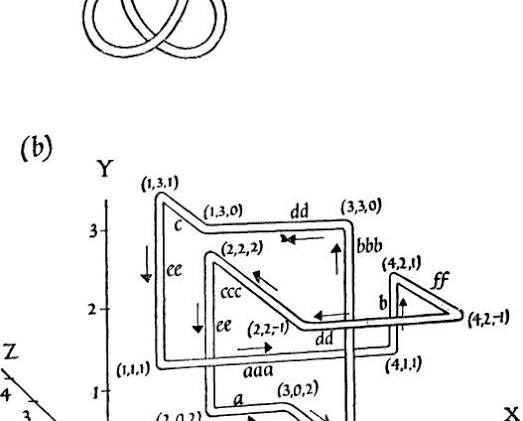
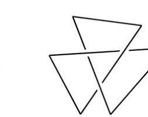
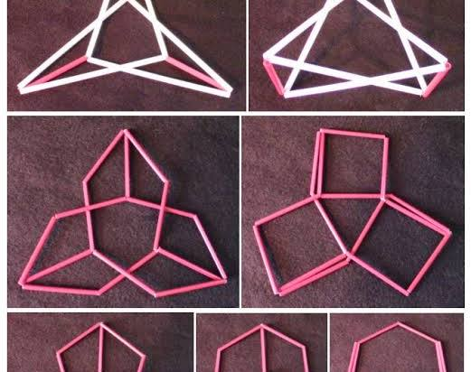
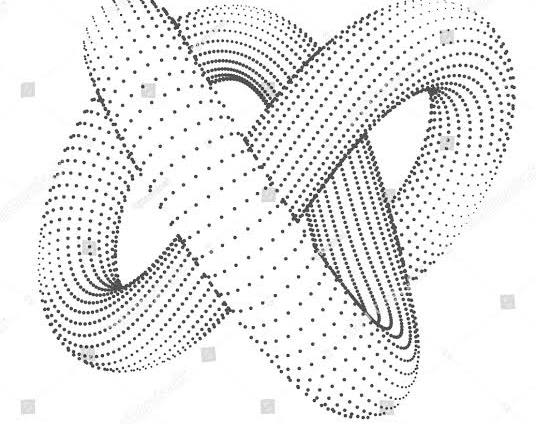
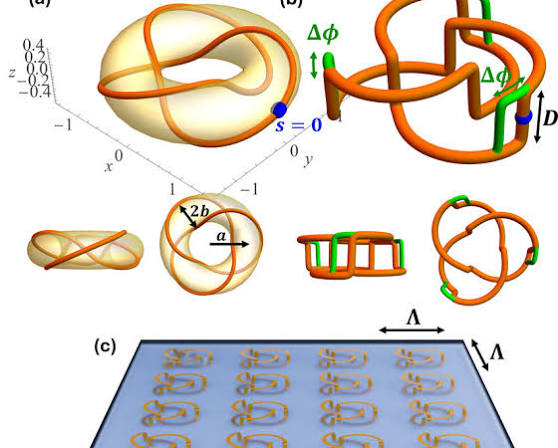
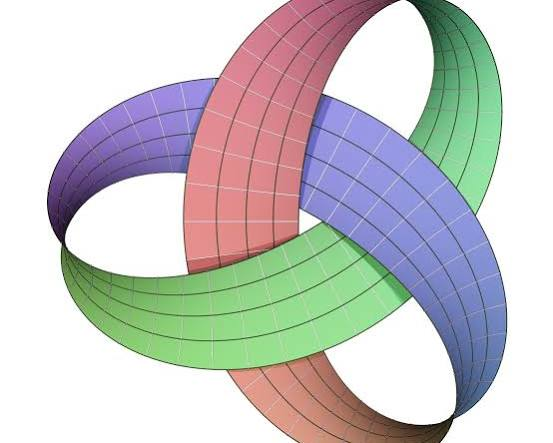
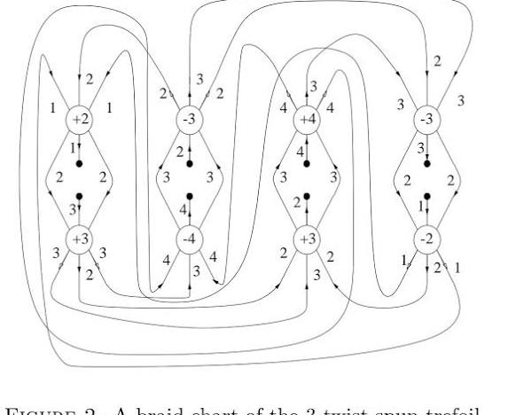
3D Cubic & Isometric Structures
Often called a cubic trefoil knot, this version translates the design into 3D space using interconnected rectangular bars or block segments. By utilizing right-angle turns along the X, Y, and Z axes, the path creates a modern, blocky sculpture that mimics the continuous over-under movement of a standard knot.
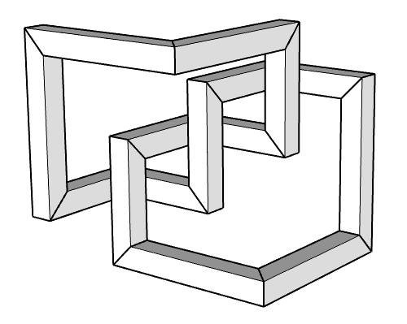
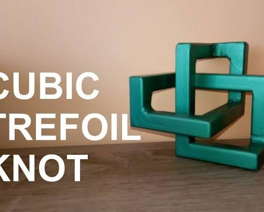
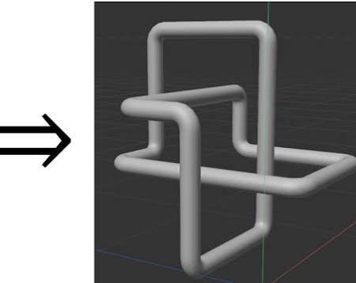
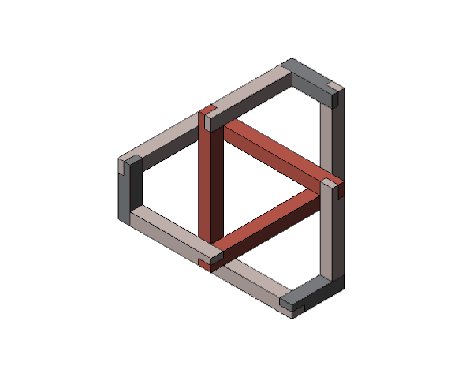
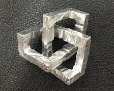
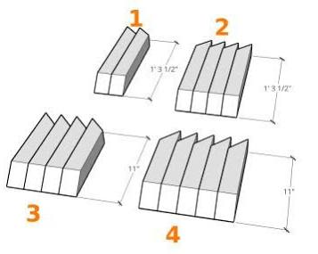
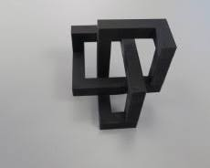
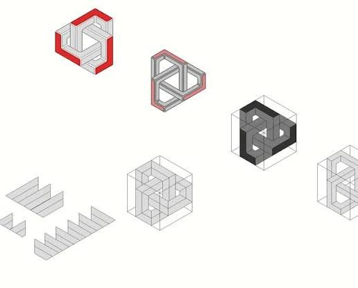
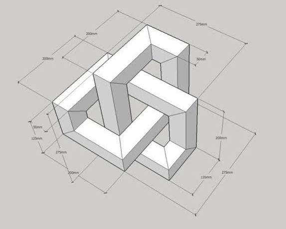
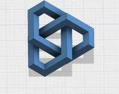
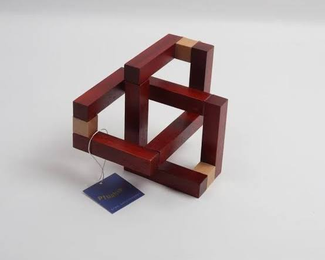
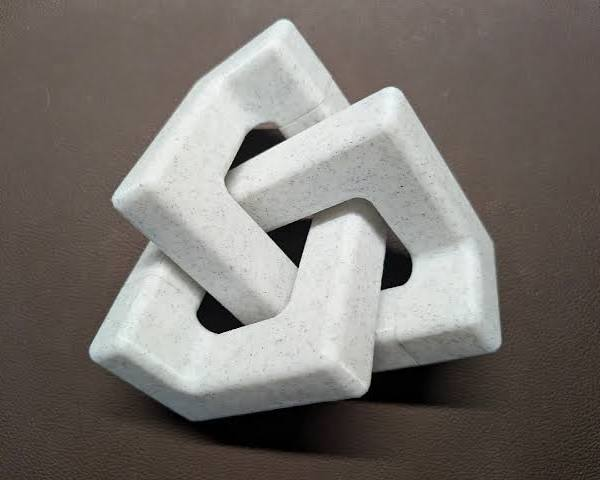
Are you looking to draw this style digitally (like a vector logo), build it as a 3D modeling project, or do you need a specific grid pattern to sketch it by hand?
Prompt 2 · You
no 3d the original prompt
Response 2 · Google AI Mode
Here’s your generated image.
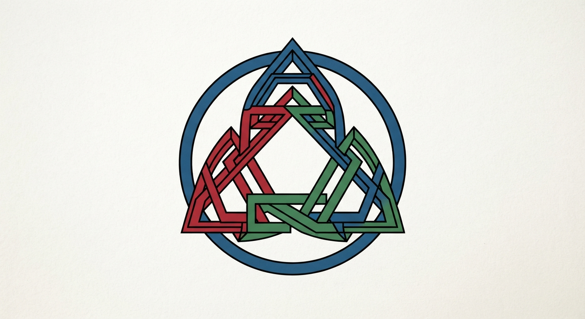
Download
Here are some web examples exploring similar flat, 2D geometric knot vectors and symbols for visual context.
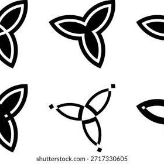
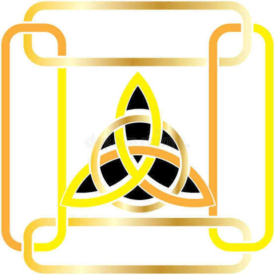
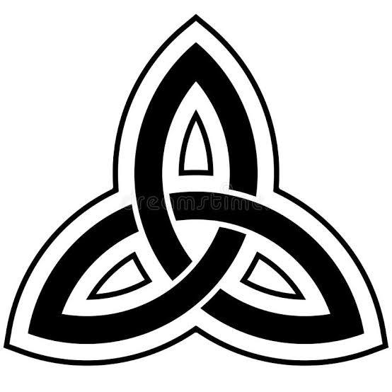
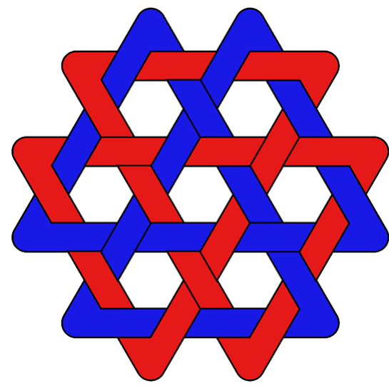
Would you like to adjust the design details, such as adding color, changing the line thickness, or modifying the layout symmetry?
Prompt 3 · You
You sent: 1 image and said: No the original prompt like but better, like that escher m.c. donalds for the vox populi version of art
Response 3 · Google AI Mode
Here’s your generated image.
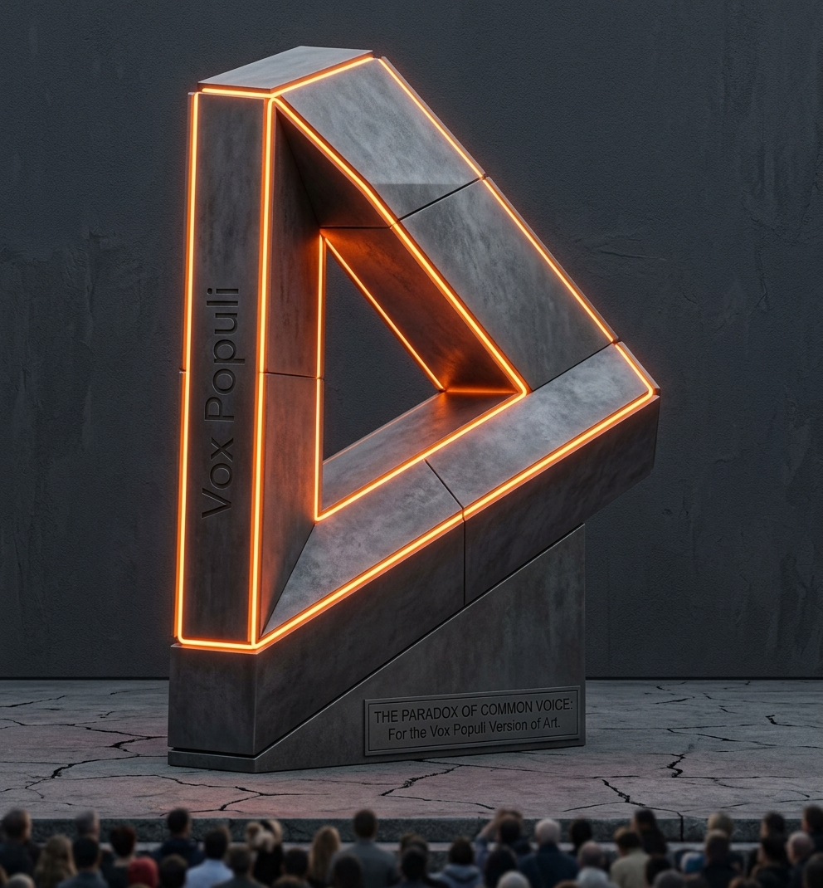
Download
Here are some web examples of clean, graphic Penrose triangles and similar impossible object vector designs for your visual inspiration.
Would you like to tweak the final style by making the block edges thicker, shifting the coloring, or changing the background to a different layout?
Source links preserved from this response
- Intersections of Magical Worlds: M.C. Escher, Optical Illusions & Tessellations | Ocean View Arts
oceanviewarts.com
https://oceanviewarts.com/intersections-of-magical-worlds-m-c-escher-optical-illusions-tessellations/ - The Art of M.C. Escher – National Museum of Mathematics
momath.org
https://momath.org/artofmc/ - MC Escher the Penrose Triangle from a Journey Through Time DARK t-shir – Art-O-Rama Shop
artoramashop.com
https://artoramashop.com/products/mc-escher-the-penrose-triangle-from-a-journey-through-time-dark-t-shirt - penrose tringle - Flashbak
flashbak.com
https://flashbak.com/watch-m-c-escher-make-his-impossible-mathematical-art-in-this-1971-film-406344/penrose-tringle/
Prompt 4 · You
formalized, generated
Response 4 · Google AI Mode
The design has been formalized into a precise, vector-aligned layout inspired by the structural paradoxes of M.C. Escher and the blocky "vox populi" style of geometric impossible objects.
Here’s your generated image.
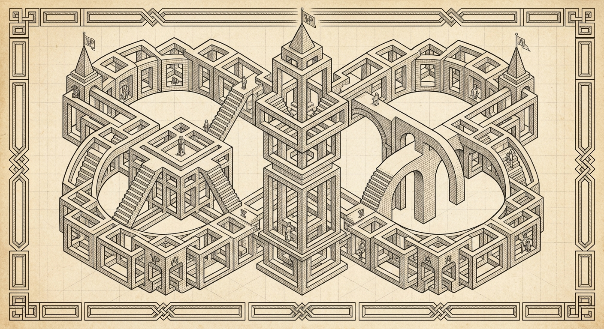
Download
For reference and alternative visual approaches, you can explore similar mathematical artwork layouts from web collections below:
Would you like to experiment with a different color palette (such as high-contrast primary colors or monochrome ink tones), or should we adjust the thickness of the lines to make the interlocking blocks stand out more?
Source links preserved from this response
- impossible #isometric #penrosetriangle #geometry #symmetry #pattern #mathart #regolo54 #oscarreutersvärd #Escher #handmade #pencil #opticalillusion
dk.pinterest.com
https://dk.pinterest.com/pin/262686590748872143/ - Escher-Style Impossible Shape – Royalty-Free Vector | VectorStock
$14.99
VectorStock
https://www.vectorstock.com/royalty-free-vector/escher-style-impossible-shape-vector-29027060 - Impossible shapes. Optical illusion figure. Abstract eternal geometric object. Impossible endless outline triangle. Impossible geometry symbol on a white background. Optical art. Escher style. 4920105 Vector Art at Vecteezy
vecteezy.com
https://www.vecteezy.com/vector-art/4920105-impossible-shapes-optical-illusion-figure-abstract-eternal-geometric-object-impossible-endless-outline-triangle-impossible-geometry-symbol-on-a-white-background-optical-art-escher-style - Impossible shapes. Logo. Sacred geometry. Optical illusion. Abstract ...
Vecteezy
https://www.vecteezy.com/vector-art/5190564-impossible-shapes-logo-sacred-geometry-optical-illusion-abstract-eternal-geometric-object-optical-art-impossible-geometry-symbol-on-a-white-background-line-art-escher-style - Sacred Geometry | Penrose Impossible Triangle | Decal | Sticker | Graphic | Editable Shape | .SVG Cut File for Cricut, Brother, Glowforge - Etsy
etsy.com
https://www.etsy.com/listing/1164853601/sacred-geometry-penrose-impossible - Impossible shapes. Logo. Optical illusion. Sacred geometry figure. Abstract eternal green geometric object. Impossible endless outline. Optical art. Impossible geometry shape on a white background. 5449154 Vector Art at Vecteezy
vecteezy.com
https://www.vecteezy.com/vector-art/5449154-impossible-shapes-logo-optical-illusion-sacred-geometry-figure-abstract-eternal-green-geometric-object-impossible-endless-outline-optical-art-impossible-geometry-shape-on-a-white-background